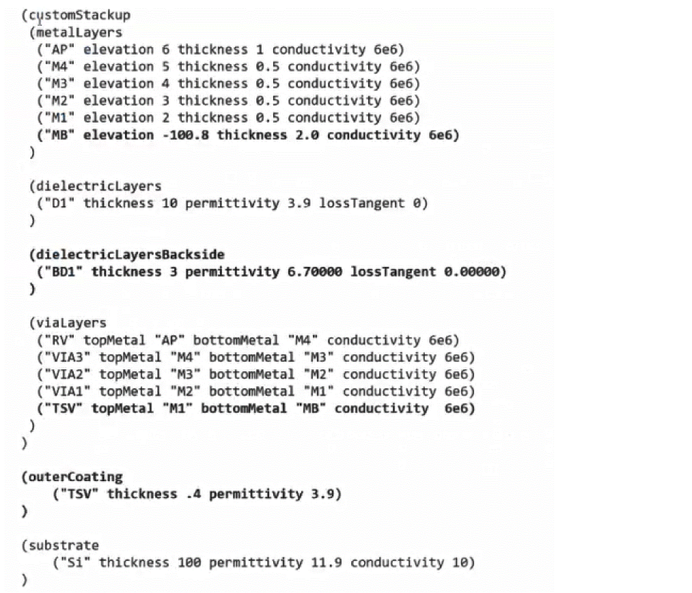

Tags in the Custom Process Corner Settings File
This file can contain the following tags:
-
customStackup: Contains the following subtags:-
metalLayers: Specifies a list of metal layers in the design. For each metal layer, you can specify the name, elevation, thickness, permittivity, and loss tangent.
For metal layers below the substrate, specify a negative value for the elevation argument. In this case, the elevation is measured from the top of the substrate to the top of the metal layer below the substrate. -
dielectricLayers: Specifies a list of dielectric layers above the substrate. For each dielectric layer, you can specify the name, thickness, permittivity, and loss tangent. -
dielectricLayersBackside: Specifies a list of dielectric layers below the substrate. For each dielectric layer, you can specify the name, thickness, permittivity, and loss tangent. -
viaLayers: Specifies the details of vias or through silicon vias. When you have a through silicon via or an interposer IC, you also need to specify the outerCoating tag. -
designScale: Specifies a scaling factor for the layout. The scaling factor is used when the size of the drawn layout is not the same as the size of the manufactured layout.
-
- layerElevationAdjustment
- dielectricSimplification
- substrate
- includeLPPs
- outerCoating
- materialFile
An example of a .emproc file that defines a custom stackup is given below.

Related Topics
Configuring Process Settings for IC Layouts
Format of the Process Corner Setting File Referring to an ICT or QRC Technology File
Return to top